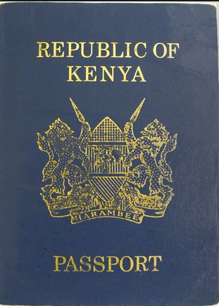

- Citizenship is the condition of being a member of a state, country or nation.
- One can become a citizen of a country either by birth, or by registration.
By birth
A person becomes a Kenyan citizen if;
- Their mother or father is a Kenyan citizen.
- They are found in Kenya when they are less than eight years old, and the nationalities of them and their parents are not known.
- A person who is a citizen by birth but has ceased to be a citizen is entitled on application to regain Kenyan citizenship. This is known as dual citizenship.
You must be a citizen of Kenya to qualify for a Kenyan Passport. A passport allows you to travel to other countries.
Citizenship by registration
The following categories of people qualify to become citizens through registration;
- A person who has been married to a Kenyan citizen for at least seven years is entitled on application to be registered as a citizen.
- A person who has been lawfully a resident in Kenya for a continuous period of seven years may apply to be registered as a citizen.
- A child who is not a citizen but is adopted by a citizen is entitled on application to be registered as a citizen.
Dual citizenship
- A person who is a citizen by birth but has ceased to be a citizen because the persion acquired citizenship of another country, is entiltled upon application to regain his or her Kenyan citizenship.
- This is known as dual citizenship. The person legally belongs to two countries at the same time.
- Such a person has identification documents for the two countries.
